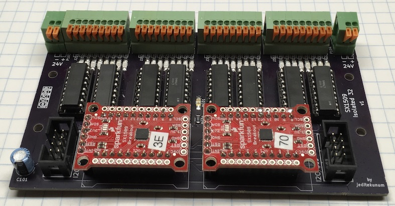

SX1509 Isolated 32 SF - V1
April 2018
SX1509 16 I/O Expander for I2C
The SX1509 is a wonderful I/O expander for use in home automation projects involving LEDs. Unlike other I/O expanders, it has the ability to provide hardware-driven LED special effects, such as dimming and fade. What's not so pleasant is that it only comes in a QFN-UT-28 package requiring SMD soldering.
The SparkFun SX1509 I/O Expander Adapter
The SparkFun SX1509 Adapter (and many clones) is a good breakout for the SX1509 but it needs another adapter for mounting in a project. This article presents an adapter for the adapter.
The Adapter Adapter
This design supports up to 2 SparkFun SX1509 Adapters. It is designed to use half of each adapter for switch/button input and half for LED indicator output. One will note in the SX1509 datasheet that only half of the ports are capable of the more advanced LED behavior. The resulting board supports 16 inputs and 16 outputs/LEDs. The board fits standard 72mm DIN carriers or typical DIN clips.
The SX1509s are isolated from the switches/LEDs via DIP package LTV-845 optocouplers.
A PCB of the adapter can be ordered from OSHPark. (As of 2018 ~$70US for 3 boards)
The schematic is available here.
The I2C connector is documented at Standard Connector for I2C.
Many components are SMD although reasonably large and easy to work with. Resistors and LEDs are 1206 size.
Scaling Up
The SX1509 supports 4 unique addresses allowing up to 2 of these boards per I2C bus for 32 buttons and 32 LEDs. When used with I2C Multiplexer 4 up to 8 of the boards is supported for a maximum of 128 buttons and 128 LEDs.
Modification of SparkFun Adapters
Solder jumpers SJ4 and SJ5 may need to be adjusted to select the address of each module. Both sides of the SDA/SCL pullup jumper SJ1 should probably be broken.
Switches & LEDs
With isolation the voltages used by the switches and LEDs is application specific. At both ends of connector row are -/+ for this supply (one in and one out for daisy-chaining). Switch activation must pull the input to ground. Positive voltage is supplied to LED output. Both input and output go through a on-board LED so the current should be appropriate.
This board is designed with the Wattstopper LVSW series wall switches in mind. They operate on 24VDC and contain resistors on the LED indicators limiting each indicator current to approximately 1ma @ 24VDC.
The input and output connectors are spring terminal blocks grouped in blocks of 4 inputs and 4 outputs (and 1 common). The wiring of each block of 9 pins (part number KF141V 9P) is common, 4 inputs, 4 outputs. This arrangement makes it easy to match a block to a cable.
By using a STP cable (Cat 5e is fine) the shield leader can be used as common to support up to a 4 switch LVSW-104. A LVSW-108 would require two cables.
Example
The SMD components along the green connectors are LEDs. I use red for inputs and blue for outputs. There are many SMD resistors on the back of the board under the DIP sockets.
